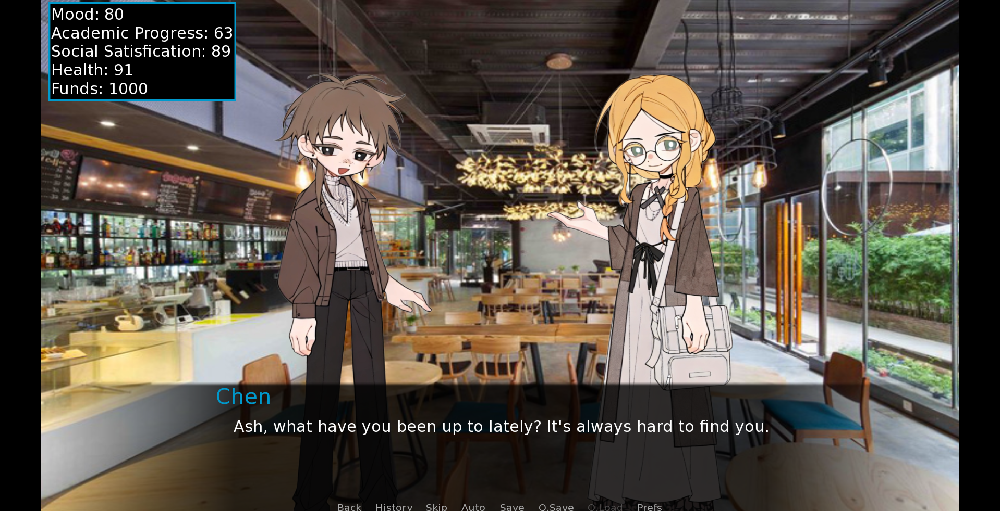
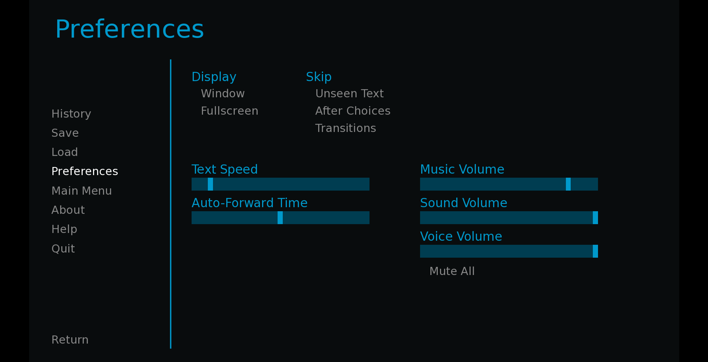

Cash or Collapse

Fig 1 Main Menu
Fig 2 Menu

Fig 3 Sprites

Fig 4 Settings
About
Cash or Collapse is a visual novel style game that combines behavioral economics theory, aiming to help players recognize and understand common cognitive biases in economic and social decision-making, such as anchoring bias, loss aversion, and overconfidence.
Through a series of interactive decision-making tasks, players will experience the consequences of "irrational behavior" in a virtual environment and learn how to optimize their thinking patterns, gradually improving their ability to make rational decisions. The ultimate goal of the game is to help players improve decision-making rationality and overcome common cognitive biases through interactive learning and feedback. Every decision made by the player will impact their rationality score, which will, in turn, influence the game’s outcome.
Design Process
1. Planning - Brainstorm project idea, deciding roles, writing proposal
2. Writing - Script writing, proofreading
3. Implementation - Coding, music, visuals
4. Review - Feedback, revise content
5. Distribution - Selecting participants for testing
6. Analysis - Collect findings, analyze data
Findings
Overall, the results of the pre-test and post-test survey indicate that Cash or Collapse was successful in strengthening participants’ understanding of core behavioral economics concepts, particularly the Sunk Cost Fallacy and rational decision-making. However, the data also reveal important limitations in how this knowledge transfers to real-life, low-stakes situations.
Team
Virelle Lee Luo Yuan - 124040091@link.cuhk.edu.cn - Project lead, Game developer, Website developer
Shi Yutong - 124030081@link.cuhk.edu.cn
Zheng Yuhe - 124030127@link.cuhk.edu.cn
Shen Kehan - 123090483@link.cuhk.edu.cn
Links